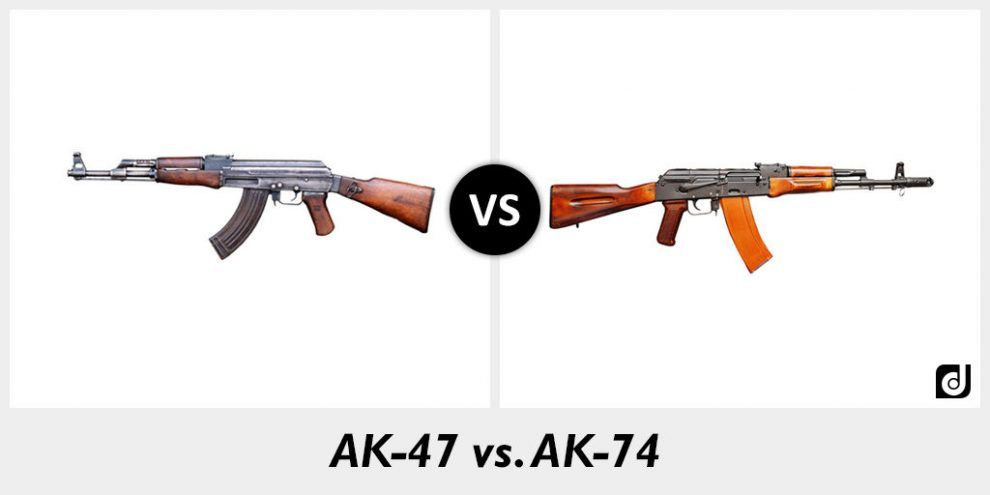

El Avtomat Kalashnikov modelo 1947, más conocido por su acrónimo, AK-47 por el nombre de su creador y la fecha en la que la creó, es un fusil de asalto soviético, de calibre 7,62 mm, diseñado por Mijaíl Kaláshnikov, combatiente ruso durante la Segunda Guerra Mundial. Fue el fusil oficial de la Unión Soviética entre 1951 y 1978. A diciembre de 2007, el AK-47 es el arma de fuego de mayor producción de la historia, con cerca de 80 millones de unidades manufacturadas.
Lo que hace peculiar a este fusil es su sistema de recarga de cartuchos, que utiliza la fuerza de los gases de combustión producidos por el disparo para facilitar la colocación de un nuevo cartucho en la recámara del arma y expulsar el casquillo ya utilizado. Sistema que es conocido como «toma de gases en un punto del cañón».Primero abre el cerrojo y luego lo empuja hacia atrás. Después, un muelle recuperador ejerce esta acción hacia delante para repetir el ciclo. Esto hace que el arma tenga un menor retroceso y que por tanto la fiabilidad en el disparo sea mayor.
| Modelo | Año | Peso | Munición |
|---|---|---|---|
| AK-47 | 1947 | 4,2 Kg | 7,62 mm |
| AK-74 | 1974 | 3,07 Kg | 5,45mm |